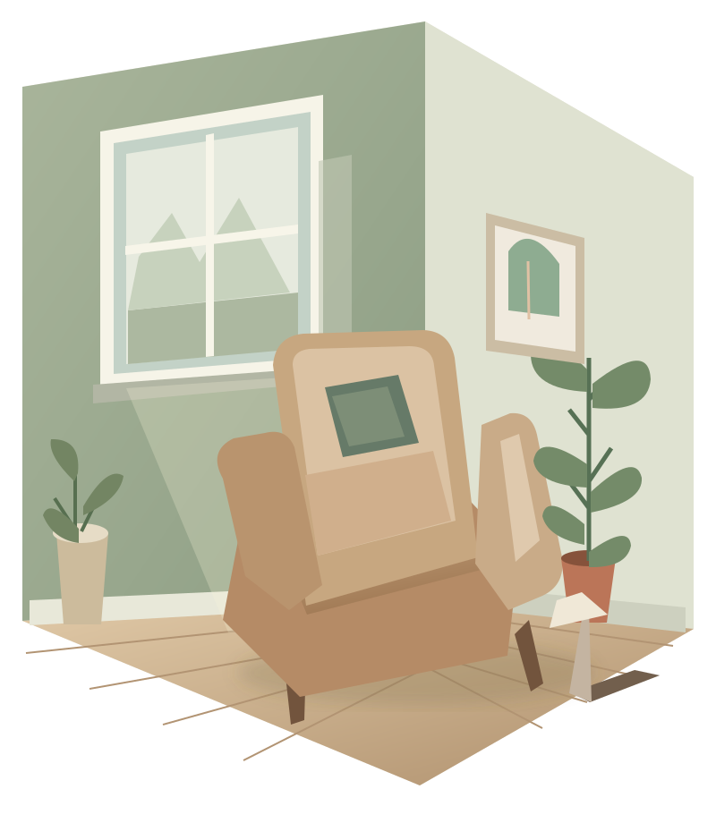

Inside & out
Internal and external decorating, detailed preparation, and colour and design consulting.
Discuss your project ↗SURREY & SOUTH WEST LONDON
Painting, decorating and wood repairs with ITA-DECOR. Talk through your next project directly with Andras Ita.
Let’s talk about your spaceInterior & exterior · Wallpaper · Wood repairs

FROM THE FIRST WALL
TO THE FINAL DETAIL.
OUR CRAFT
Choose the work your space needs.
Discuss scope and availability with Andras.
Internal and external decorating, detailed preparation, and colour and design consulting.
Discuss your project ↗Lining and wallpaper hanging, plus drywall and ceiling repairs.
Discuss your project ↗Small carpentry jobs, wood repairs and window refurbishment using the WINDOW CARE method.
Discuss your project ↗A LITTLE COLOUR
Try a palette on the illustration above. Then talk with Andras about colour and design for your own space.
Sage colour study selected.
View the room study ↑01 — YOUR SPACE, YOUR PALETTE
Illustrative palettes only. Actual paint finish, colour and suitability should be agreed with the decorator.
LET’S TALK ABOUT YOUR HOME
The official site lists Surrey and South West London, including Richmond, Putney, Wimbledon, New Malden and Kingston. Ask about your location and project.
DIRECT CONTACT
0790 273 6433 ↗andras.ita30@gmail.comCall or email to discuss the work and arrange the next step. Opening hours are not listed; availability should be confirmed.
Explore the official project gallery ↗